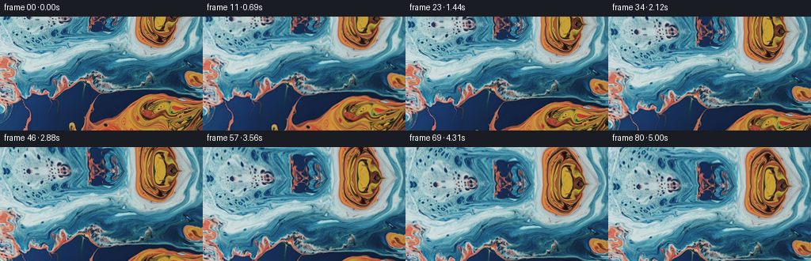
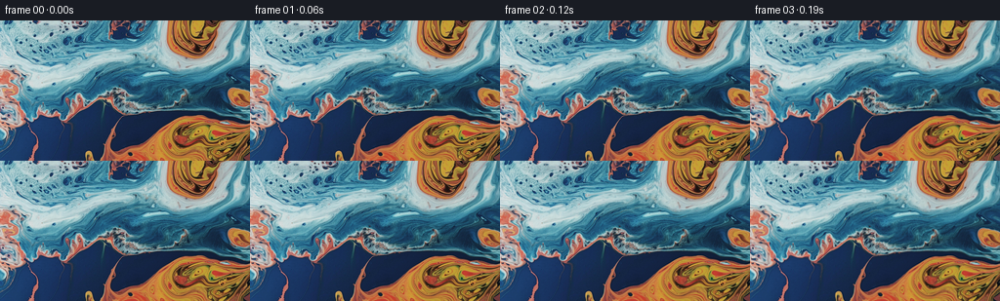

CODING AGENTS AS PIXEL WORLD MODELS
traex/GPT-5.6-Sol · 0003_s1
点击播放 · 原生 RGB 像素
逐轮保存的候选
回放视频、检查图与代码变化。
每份候选均可单独播放。实际图片检查记录在下方工具轨迹中。
候选 01播放与检查图
点击播放 · 原生 RGB 像素


展开代码变化
--- 上一保存版本
+++ 本次保存版本
@@ -0,0 +1,115 @@
+"""Generate a gently moving macro-liquid shot from the supplied first frame.
+
+The motion is constructed as a continuous upward camera tilt (image content
+moves down), with a very small low-frequency deformation to keep the liquid
+from looking like a rigid printed surface. Pixels revealed above the initial
+frame are continued from its upper liquid texture with a smoothly warped
+reflection.
+"""
+
+from pathlib import Path
+import json
+
+import cv2
+import numpy as np
+from PIL import Image
+
+import artifact_io
+
+
+def smoothstep(x: float) -> float:
+ return x * x * (3.0 - 2.0 * x)
+
+
+def make_frames(first: np.ndarray, frame_count: int) -> np.ndarray:
+ h, w, _ = first.shape
+ yy, xx = np.mgrid[0:h, 0:w].astype(np.float32)
+ frames = np.empty((frame_count, h, w, 3), dtype=np.uint8)
+ frames[0] = first # Required to be pixel-identical, with no resampling.
+
+ # A substantial but unhurried tilt: about one third of the picture height.
+ total_tilt = 49.0
+
+ for index in range(1, frame_count):
+ t = index / float(frame_count - 1)
+ ease = smoothstep(t)
+ camera_y = total_tilt * ease
+
+ # Low-amplitude, coherent advection. Every term is zero at t=0, so
+ # motion grows out of the supplied still rather than jumping from it.
+ dx = (
+ 1.35
+ * (np.sin(2.0 * np.pi * (yy / 118.0 + 0.22 * t))
+ - np.sin(2.0 * np.pi * (yy / 118.0)))
+ + 0.55
+ * (np.sin(2.0 * np.pi * (xx / 183.0 - 0.13 * t))
+ - np.sin(2.0 * np.pi * (xx / 183.0)))
+ + 0.75 * np.sin(np.pi * t)
+ ).astype(np.float32)
+ dy = (
+ 0.80
+ * (np.sin(2.0 * np.pi * (xx / 172.0 - 0.17 * t))
+ - np.sin(2.0 * np.pi * (xx / 172.0)))
+ + 0.35
+ * (np.sin(2.0 * np.pi * ((xx + yy) / 226.0 + 0.16 * t))
+ - np.sin(2.0 * np.pi * ((xx + yy) / 226.0)))
+ ).astype(np.float32)
+
+ raw_y = yy - camera_y + dy
+ raw_x = xx + dx
+
+ # Continue the image above y=0. The continuation meets row zero
+ # exactly, then samples a progressively side-warped version of the
+ # pale blue/orange texture near the top of the source. This makes the
+ # newly revealed region read as more of the same continuous liquid.
+ depth = np.maximum(-raw_y, 0.0)
+ extension = depth * (0.70 + 0.045 * np.sin((raw_x + 9.0) / 29.0))
+ extension += (
+ 1.15
+ * np.sin(depth / 10.5 + raw_x / 51.0)
+ * (1.0 - np.exp(-depth / 7.0))
+ )
+ map_y = np.where(raw_y < 0.0, extension, raw_y).astype(np.float32)
+
+ lateral = depth * (0.038 + 0.042 * np.sin(raw_x / 34.0))
+ lateral += (
+ 1.45
+ * np.sin(depth / 13.0 + raw_x / 63.0)
+ * (1.0 - np.exp(-depth / 8.0))
+ )
+ map_x = (raw_x + np.where(raw_y < 0.0, lateral, 0.0)).astype(np.float32)
+
+ frame = cv2.remap(
+ first,
+ map_x,
+ map_y,
+ interpolation=cv2.INTER_CUBIC,
+ borderMode=cv2.BORDER_REFLECT_101,
+ )
+
+ # Extremely restrained traveling illumination suggests changing
+ # reflections on the fluid. It stays below a few RGB levels and is
+ # deliberately absent from frame zero.
+ light = 1.0 + 0.010 * (
+ np.sin(xx / 45.0 + yy / 67.0 - 1.25 * t)
+ - np.sin(xx / 45.0 + yy / 67.0)
+ )
+ frame = np.clip(frame.astype(np.float32) * light[..., None], 0, 255)
+ frames[index] = np.rint(frame).astype(np.uint8)
+
+ return frames
+
+
+def main() -> None:
+ case_dir = Path(__file__).resolve().parent
+ spec = json.loads((case_dir / "task_spec.json").read_text())
+ first = np.asarray(Image.open(case_dir / "first_frame.png").convert("RGB"))
+ expected = (int(spec["height"]), int(spec["width"]), 3)
+ if first.shape != expected:
+ raise ValueError(f"first_frame shape {first.shape}, expected {expected}")
+ frames = make_frames(first, int(spec["frames"]))
+ artifact_io.save(frames, case_dir)
+
+
+if __name__ == "__main__":
+ main()
可观测工具轨迹
实际执行的命令与返回图片。
命令 1exit 0
/bin/bash -lc "cat GENERATION_RULES.md && printf '\\n---PROMPT---\\n' && cat prompt.txt"
命令 2exit 1
/bin/bash -lc "find . -maxdepth 2 -type f -printf '%p\\n' | sort && printf '\\n---TOOLS---\\n' && command -v ffmpeg && command -v python3"
命令 3exit 0
/bin/bash -lc "cat task_spec.json && sed -n '1,240p' artifact_io.py"
命令 4exit 0
/bin/bash -lc "python3 - <<'PY'
from PIL import Image
import numpy as np
im=np.array(Image.open('first_frame.png').convert('RGB'))
print(im.shape,im.dtype, im.min((0,1)), im.max((0,1)), im.mean((0,1)), im.std((0,1)))
# row/col mean and quantiles; categorized blue/orange/dark/bright by 12x8 blocks
for name,arr in [('rowmean', im.mean(1)), ('colmean', im.mean(0))]:
print(name)
for i in np.linspace(0,len(arr)-1,12 if name=='rowmean' else 16).astype(int): print(i, np.round(arr[i],1))
# coarse block avg
for y in range(0,144,12):
print(' '.join('#%02x%02x%02x'%tuple(im[y:y+12,x:x+16].mean((0,1)).astype(int)) for x in range(0,256,16)))
PY"命令 5exit 0
/bin/bash -lc "python3 - <<'PY' mods=['numpy','PIL','scipy','cv2','imageio'] for m in mods: try: x=__import__(m); print(m, getattr(x,'__version__','ok')) except Exception as e: print(m,'NO',e) PY"
命令 6exit 0
/bin/bash -lc "python3 - <<'PY'
from PIL import Image
import numpy as np
im=np.array(Image.open('first_frame.png').convert('RGB'))
# edges gradient; color class fractions and bbox
lum=im.mean(2)
print('lum q',np.percentile(lum,[0,1,5,25,50,75,95,99,100]))
# sobel-ish gradient row
for y in range(0,144,8):
g=np.abs(np.diff(im[y:y+8].astype(float),axis=0)).mean()
print(y,round(im[y:y+8].mean(),1),round(g,1))
PY"命令 7exit 0
/bin/bash -lc 'python3 generate.py'
命令 8exit 0
/bin/bash -lc "python3 - <<'PY'
import numpy as np
from PIL import Image
f=np.array(Image.open('first_frame.png').convert('RGB'))
z=np.load('pixels.npz')['pixels']
rgb=np.stack([(z>>16)&255,(z>>8)&255,z&255],-1).transpose(2,0,1,3).astype(np.uint8)
print('shape/dtype',rgb.shape,rgb.dtype)
print('first exact',np.array_equal(rgb[0],f),'maxerr',np.max(np.abs(rgb[0].astype(int)-f.astype(int))))
for i in [1,2,10,20,40,60,80]:
d=np.abs(rgb[i].astype(float)-rgb[i-1].astype(float)); d0=np.abs(rgb[i].astype(float)-f.astype(float))
print(i,'step mae',round(d.mean(),2),'step >10',round((d>10).mean(),3),'from0',round(d0.mean(),1),'mean',np.round(rgb[i].mean((0,1)),1))
PY
ls -lh pixels.npz index.html inspection.png transition_check.png frames/00.png frames/80.png"命令 9exit 0
/bin/bash -lc "python3 - <<'PY'
# Numerical optical-flow check: median content displacement between selected frames.
import cv2, numpy as np
from PIL import Image
ims=[cv2.cvtColor(np.array(Image.open(f'frames/{i:02d}.png')),cv2.COLOR_RGB2GRAY) for i in [0,20,40,60,80]]
for k in range(4):
pts=cv2.goodFeaturesToTrack(ims[k],300,.01,3)
p2,st,e=cv2.calcOpticalFlowPyrLK(ims[k],ims[k+1],pts,None)
d=(p2-pts)[st.ravel()>0].reshape(-1,2)
print(k, 'median dx/dy', np.median(d,0), 'mean',np.mean(d,0))
PY"保存候选 1 份；完成命令 9 次；可验证图片返回 0 张。原始 API 响应与完整日志保留在本地。